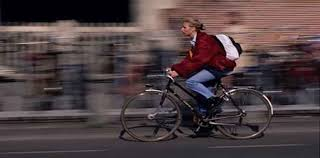

O que é Cinemática?
A Cinemática é uma área da física que estuda o movimento dos corpos de uma forma geral, mas sem considerar as forças que agem sobre eles.
Mais especificamente, a Cinemática tem como objetivo estudar e analisar características como velocidade, aceleração e posição utilizando gráficos e muitos cálculos matemáticos.
Antes de mergulharmos a fundo na Cinemática, bora conhecer alguns conceitos importantes sobre o tema?
- Referencial: é um sistema de coordenadas fundamental para definirmos as posições de outros corpos a partir do ponto de vista do qual observamos os eventos físicos.
- Movimento: A posição de um corpo está variando de acordo com o tempo em relação a um referencial. Exemplo: considerando o trem em movimento da foto ao lado e supondo que tenha uma estação de trem, podemos afirmar que em relação ao trem, as pessoas que estão na estação, estão em movimento.
- Repouso: A posição de um corpo não está variando de acordo com o tempo em relação a um referencial. Exemplo: tomando como referência uma estação de ônibus, as pessoas estão paradas, em repouso, esperando o ônibus chegar.
- Trajetória: é o trajeto ou a linha que ele percorre em relação a um referencial.
- Espaço: é uma grandeza que determina sua posição em relação a trajetória, a partir da origem, podendo ser positivo ou negativo.